| scenario | run_files | total_transition_rows | phases | |
|---|---|---|---|---|
| 0 | postgresql_uniform_heavy_mixed | 4 | 1922 | run, reference, clean-run, avg-run, extend |
Epoch-to-Epoch Counter Change Correlation Report: postgresql_uniform_heavy_mixed
1 Overview
This report analyzes transition-level behavior for PostgreSQL uniform_heavy_mixed.
The unit of analysis is a same-phase epoch transition:
epoch N-1 -> N
So a run with 100 epochs contributes 99 transition points for each repeated phase. The shorter run2 file contributes fewer because it ends at epoch 89.
The goal is narrower than the earlier markdown report: for each phase, correlate performance changes between epochs with the matching change in PostgreSQL counters over the same interval.
Repeated phases included here:
runreferenceclean-runavg-runextend
The report excludes load because it does not repeat across epochs.
2 Load And Prepare Transition Data
3 Transition Coverage
| phase | source_file | avg-run | clean-run | extend | reference | run |
|---|---|---|---|---|---|---|
| 0 | postgresql_run1_uniform_heavy_mixed.csv | 99 | 99 | 99 | 99 | 99 |
| 1 | postgresql_run2_uniform_heavy_mixed.csv | 87 | 87 | 88 | 87 | 88 |
| 2 | postgresql_run3_uniform_heavy_mixed.csv | 99 | 99 | 99 | 99 | 99 |
| 3 | postgresql_run4_uniform_heavy_mixed.csv | 99 | 99 | 99 | 99 | 99 |
| source_file | min_epoch | max_epoch | epoch_count | |
|---|---|---|---|---|
| 0 | postgresql_run1_uniform_heavy_mixed.csv | 1 | 100 | 100 |
| 1 | postgresql_run2_uniform_heavy_mixed.csv | 1 | 89 | 89 |
| 2 | postgresql_run3_uniform_heavy_mixed.csv | 1 | 100 | 100 |
| 3 | postgresql_run4_uniform_heavy_mixed.csv | 1 | 100 | 100 |
- Runs 1, 3, and 4 span
100epochs and therefore contribute99transitions per repeated phase. - Run 2 ends at epoch
89, so it contributes88transitions per repeated phase. - Across all runs and phases, the report analyzes 1,922 transition rows.
4 Cross-Phase Transition Summary
| Phase | Transitions | Mean throughput change % | Median throughput change % | Mean READ latency change % | Median READ latency change % | Mean UPDATE latency change % | Median UPDATE latency change % | Mean EXTEND latency change % | Median EXTEND latency change % | |
|---|---|---|---|---|---|---|---|---|---|---|
| 0 | run | 385 | -0.58 | -0.91 | +1.25 | +0.94 | +0.67 | +0.85 | +nan | +nan |
| 1 | reference | 384 | -0.46 | -0.70 | +1.43 | +0.95 | +0.89 | +0.73 | +nan | +nan |
| 2 | clean-run | 384 | -0.32 | -0.64 | +1.31 | +1.03 | +0.91 | +0.66 | +nan | +nan |
| 3 | avg-run | 384 | -0.16 | -0.16 | +0.99 | +0.94 | +0.27 | +0.03 | +nan | +nan |
| 4 | extend | 385 | -0.61 | -0.77 | +nan | +nan | +nan | +nan | +0.74 | +0.78 |
5 Run Vs Clean-Run P95 Significance
This section addresses the concern that raw latency variance may grow with epoch even when the percentage gap between run and clean-run is more stable.
It therefore adds two analyses on the full 100-epoch runs only:
- a paired one-sample test on
log(clean-run P95 / run P95)by epoch - a
statsmodels-free run-level trend analysis onlog(clean-run P95 / run P95)over epoch
This section uses:
- postgresql_run1_uniform_heavy_mixed.csv
- postgresql_run3_uniform_heavy_mixed.csv
- postgresql_run4_uniform_heavy_mixed.csv
run2 is excluded here because it does not have the full 100 matched epochs.
5.1 Paired Log-Ratio Test
| Operation | Pairs | Run mean P95 (us) | Clean-run mean P95 (us) | Mean log ratio | t | p | Geometric clean/run ratio | Pct difference | Ratio CI low | Ratio CI high | |
|---|---|---|---|---|---|---|---|---|---|---|---|
| 0 | READ | 300 | 487.25 | 455.04 | -0.0679 | -15.292 | 2.120e-39 | 0.9343 | -6.57% | 0.9262 | 0.9425 |
| 1 | UPDATE | 300 | 2,057.69 | 1,728.11 | -0.1390 | -11.780 | 1.439e-26 | 0.8702 | -12.98% | 0.8502 | 0.8907 |
- The paired test is run on
log(clean-run / run)so a stable percentage gap becomes an additive effect on the analysis scale. - For
READ, the geometric mean clean/run P95 ratio is about 0.934, which means clean-run P95 is about 6.6% lower on average. - For
UPDATE, the geometric mean clean/run P95 ratio is about 0.870, which means clean-run P95 is about 13.0% lower on average. - Both paired log-ratio tests are overwhelmingly significant.
5.2 Run-Level Log-Ratio Trend Over Epoch
To keep the report dependency-light, this replaces the earlier mixed-effects fit with a paired, run-level trend model that uses only SciPy.
Within each full 100-epoch run and for each operation, fit:
log(clean-run P95 / run P95) ~ epoch_centered
Then summarize the run-level midpoint effects and slopes across runs with one-sample t-tests.
Interpretation:
- the midpoint log ratio is the clean-run effect at epoch
50.5 - the slope tests whether the clean-run advantage changes over time
- because the pairing is done within epoch, most run-specific baseline shift is already removed before fitting the trend
5.2.1 Per-run fits
| Operation | source_file | run | Pairs | Midpoint log ratio | Midpoint clean/run ratio | Slope per epoch | Slope p (within run) | R^2 (within run) | Pred ratio epoch 1 | Pred ratio epoch 50.5 | Pred ratio epoch 100 | |
|---|---|---|---|---|---|---|---|---|---|---|---|---|
| 0 | READ | postgresql_run1_uniform_heavy_mixed.csv | 1 | 100 | -0.0731 | 0.9295 | -0.00059 | 1.094e-02 | 0.064 | 0.9569 | 0.9295 | 0.9029 |
| 1 | READ | postgresql_run3_uniform_heavy_mixed.csv | 3 | 100 | -0.0748 | 0.9279 | -0.00090 | 1.063e-03 | 0.104 | 0.9704 | 0.9279 | 0.8873 |
| 2 | READ | postgresql_run4_uniform_heavy_mixed.csv | 4 | 100 | -0.0559 | 0.9456 | +0.00004 | 8.976e-01 | 0.000 | 0.9439 | 0.9456 | 0.9473 |
| 3 | UPDATE | postgresql_run1_uniform_heavy_mixed.csv | 1 | 100 | -0.1201 | 0.8868 | -0.00283 | 3.986e-08 | 0.266 | 1.0200 | 0.8868 | 0.7710 |
| 4 | UPDATE | postgresql_run3_uniform_heavy_mixed.csv | 3 | 100 | -0.1501 | 0.8607 | -0.00464 | 3.907e-10 | 0.331 | 1.0826 | 0.8607 | 0.6842 |
| 5 | UPDATE | postgresql_run4_uniform_heavy_mixed.csv | 4 | 100 | -0.1469 | 0.8634 | -0.00467 | 1.523e-12 | 0.401 | 1.0877 | 0.8634 | 0.6854 |
5.2.2 Across-run summary
| Operation | Runs | Mean midpoint log ratio | Midpoint p | Midpoint clean/run ratio | Midpoint ratio CI low | Midpoint ratio CI high | Mean slope per epoch | Slope p | Slope CI low | Slope CI high | Pred ratio epoch 1 | Pred ratio epoch 50.5 | Pred ratio epoch 100 | |
|---|---|---|---|---|---|---|---|---|---|---|---|---|---|---|
| 0 | READ | 3 | -0.0679 | 7.783e-03 | 0.9343 | 0.9104 | 0.9589 | -0.00048 | 2.214e-01 | -0.00167 | +0.00070 | 0.9570 | 0.9343 | 0.9122 |
| 1 | UPDATE | 3 | -0.1390 | 4.632e-03 | 0.8702 | 0.8354 | 0.9065 | -0.00404 | 2.190e-02 | -0.00666 | -0.00143 | 1.0630 | 0.8702 | 0.7124 |
- For
READ, the midpoint clean-run effect is significantly below1, but the mean slope across runs is not significant at the0.05level. - That means the READ clean-run advantage is still present on the percentage scale, but its time trend is weak and not consistent enough across runs to call significant here.
- For
UPDATE, the midpoint clean-run effect is significantly below1and the mean slope is significantly negative. - That means the UPDATE clean-run advantage grows stronger over time rather than staying flat.
- This version keeps the log-scale variance stabilization while avoiding a
statsmodelsdependency.
5.3 P95 Ratio Over Epoch
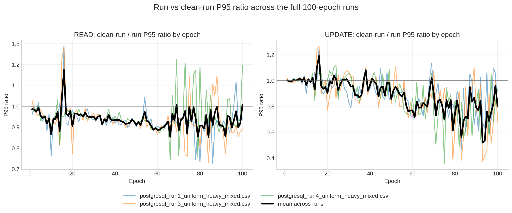
6 Strongest Same-Step Correlations
| Phase | Target | Counter | Spearman rho | |
|---|---|---|---|---|
| 0 | run | Throughput change % | No counter >= threshold | +nan |
| 1 | run | READ latency change % | No counter >= threshold | +nan |
| 2 | run | UPDATE latency change % | No counter >= threshold | +nan |
| 3 | reference | Throughput change % | No counter >= threshold | +nan |
| 4 | reference | READ latency change % | No counter >= threshold | +nan |
| 5 | reference | UPDATE latency change % | No counter >= threshold | +nan |
| 6 | clean-run | Throughput change % | Block hits/op | -0.349 |
| 7 | clean-run | Throughput change % | Block reads/op | -0.348 |
| 8 | clean-run | READ latency change % | Block hits/op | +0.308 |
| 9 | clean-run | READ latency change % | Block reads/op | +0.240 |
| 10 | clean-run | UPDATE latency change % | Block reads/op | +0.340 |
| 11 | clean-run | UPDATE latency change % | Block hits/op | +0.331 |
| 12 | avg-run | Throughput change % | No counter >= threshold | +nan |
| 13 | avg-run | READ latency change % | No counter >= threshold | +nan |
| 14 | avg-run | UPDATE latency change % | No counter >= threshold | +nan |
| 15 | extend | Throughput change % | Checkpoint buffers/op | -0.158 |
| 16 | extend | EXTEND latency change % | Checkpoint buffers/op | +0.158 |
- The threshold for calling a same-step relationship meaningful in this report is
|rho| >= 0.15. clean-runshows the clearest epoch-to-epoch I/O sensitivity: block reads/op and block hits/op move with both throughput loss and latency growth.extendshows a smaller checkpoint-driven effect throughcheckpoint buffers/op.run,avg-run, andreferencedo not have a counter that crosses the same threshold for throughput or latency change.
7 Top Correlations By Phase
7.1 run
| Target | Counter | Spearman rho | |
|---|---|---|---|
| 0 | Throughput change % | Checkpoint buffers/op | -0.050 |
| 1 | Throughput change % | Checkpoint sync ms/op | -0.029 |
| 2 | Throughput change % | Checkpoint write ms/op | -0.027 |
| 3 | Throughput change % | WAL FPIs/op | -0.025 |
| 4 | Throughput change % | Block hits/op | -0.024 |
| 5 | READ latency change % | Cleaner buffers/op | -0.128 |
| 6 | READ latency change % | WAL records/op | -0.120 |
| 7 | READ latency change % | Cache-hit ratio | +0.118 |
| 8 | READ latency change % | Block reads/op | -0.118 |
| 9 | READ latency change % | WAL FPIs/op | -0.118 |
| 10 | UPDATE latency change % | Checkpoint sync ms/op | +0.057 |
| 11 | UPDATE latency change % | Checkpoint write ms/op | +0.056 |
| 12 | UPDATE latency change % | WAL FPIs/op | +0.055 |
| 13 | UPDATE latency change % | WAL records/op | +0.051 |
| 14 | UPDATE latency change % | Block hits/op | +0.048 |
7.2 reference
| Target | Counter | Spearman rho | |
|---|---|---|---|
| 0 | Throughput change % | Checkpoint buffers/op | -0.054 |
| 1 | Throughput change % | Buffer allocs/op | +0.044 |
| 2 | Throughput change % | Cache-hit ratio | -0.022 |
| 3 | Throughput change % | WAL bytes/op | +0.021 |
| 4 | Throughput change % | WAL FPIs/op | -0.018 |
| 5 | READ latency change % | Buffer allocs/op | -0.105 |
| 6 | READ latency change % | WAL records/op | -0.099 |
| 7 | READ latency change % | WAL bytes/op | -0.099 |
| 8 | READ latency change % | Checkpoint sync ms/op | -0.099 |
| 9 | READ latency change % | Cache-hit ratio | +0.099 |
| 10 | UPDATE latency change % | Checkpoint buffers/op | +0.050 |
| 11 | UPDATE latency change % | WAL FPIs/op | +0.038 |
| 12 | UPDATE latency change % | Checkpoint sync ms/op | +0.031 |
| 13 | UPDATE latency change % | Backend buffers/op | +0.031 |
| 14 | UPDATE latency change % | Block hits/op | +0.030 |
7.3 clean-run
| Target | Counter | Spearman rho | |
|---|---|---|---|
| 0 | Throughput change % | Block hits/op | -0.349 |
| 1 | Throughput change % | Block reads/op | -0.348 |
| 2 | Throughput change % | Checkpoint buffers/op | -0.107 |
| 3 | Throughput change % | Checkpoint write ms/op | -0.068 |
| 4 | Throughput change % | WAL FPIs/op | -0.051 |
| 5 | READ latency change % | Block hits/op | +0.308 |
| 6 | READ latency change % | Block reads/op | +0.240 |
| 7 | READ latency change % | Cache-hit ratio | +0.133 |
| 8 | READ latency change % | Buffer allocs/op | -0.081 |
| 9 | READ latency change % | Backend buffers/op | -0.079 |
| 10 | UPDATE latency change % | Block reads/op | +0.340 |
| 11 | UPDATE latency change % | Block hits/op | +0.331 |
| 12 | UPDATE latency change % | Checkpoint buffers/op | +0.102 |
| 13 | UPDATE latency change % | Checkpoint write ms/op | +0.078 |
| 14 | UPDATE latency change % | WAL FPIs/op | +0.062 |
7.4 avg-run
| Target | Counter | Spearman rho | |
|---|---|---|---|
| 0 | Throughput change % | Cache-hit ratio | +0.103 |
| 1 | Throughput change % | Block reads/op | -0.054 |
| 2 | Throughput change % | Checkpoint buffers/op | +0.044 |
| 3 | Throughput change % | Checkpoint sync ms/op | -0.042 |
| 4 | Throughput change % | Cleaner buffers/op | -0.039 |
| 5 | READ latency change % | Block reads/op | +0.144 |
| 6 | READ latency change % | Block hits/op | +0.077 |
| 7 | READ latency change % | Cache-hit ratio | -0.072 |
| 8 | READ latency change % | Checkpoint write ms/op | -0.027 |
| 9 | READ latency change % | Checkpoint sync ms/op | +0.009 |
| 10 | UPDATE latency change % | Cache-hit ratio | -0.096 |
| 11 | UPDATE latency change % | Checkpoint buffers/op | -0.048 |
| 12 | UPDATE latency change % | Checkpoint sync ms/op | +0.044 |
| 13 | UPDATE latency change % | Cleaner buffers/op | +0.041 |
| 14 | UPDATE latency change % | WAL records/op | +0.033 |
7.5 extend
| Target | Counter | Spearman rho | |
|---|---|---|---|
| 0 | Throughput change % | Checkpoint buffers/op | -0.158 |
| 1 | Throughput change % | WAL FPIs/op | +0.060 |
| 2 | Throughput change % | Block reads/op | +0.059 |
| 3 | Throughput change % | WAL records/op | +0.059 |
| 4 | Throughput change % | Cache-hit ratio | -0.055 |
| 5 | EXTEND latency change % | Checkpoint buffers/op | +0.158 |
| 6 | EXTEND latency change % | WAL FPIs/op | -0.061 |
| 7 | EXTEND latency change % | Block reads/op | -0.059 |
| 8 | EXTEND latency change % | WAL records/op | -0.059 |
| 9 | EXTEND latency change % | Cache-hit ratio | +0.055 |
8 Correlation Heatmaps
8.1 run
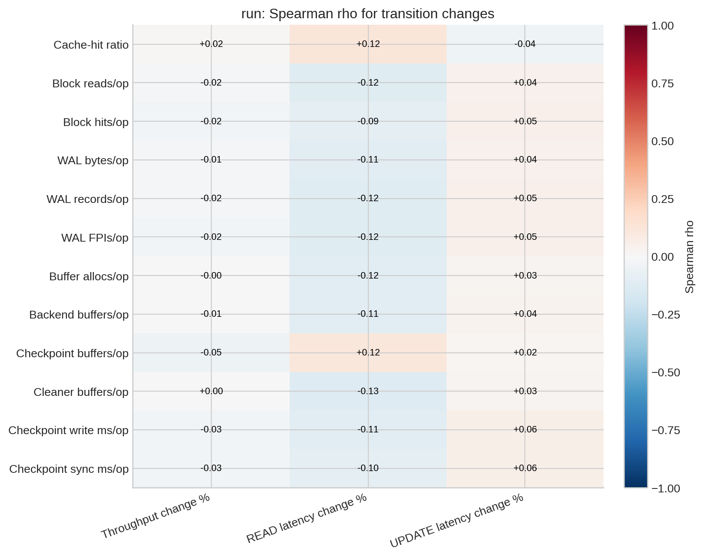
8.2 reference
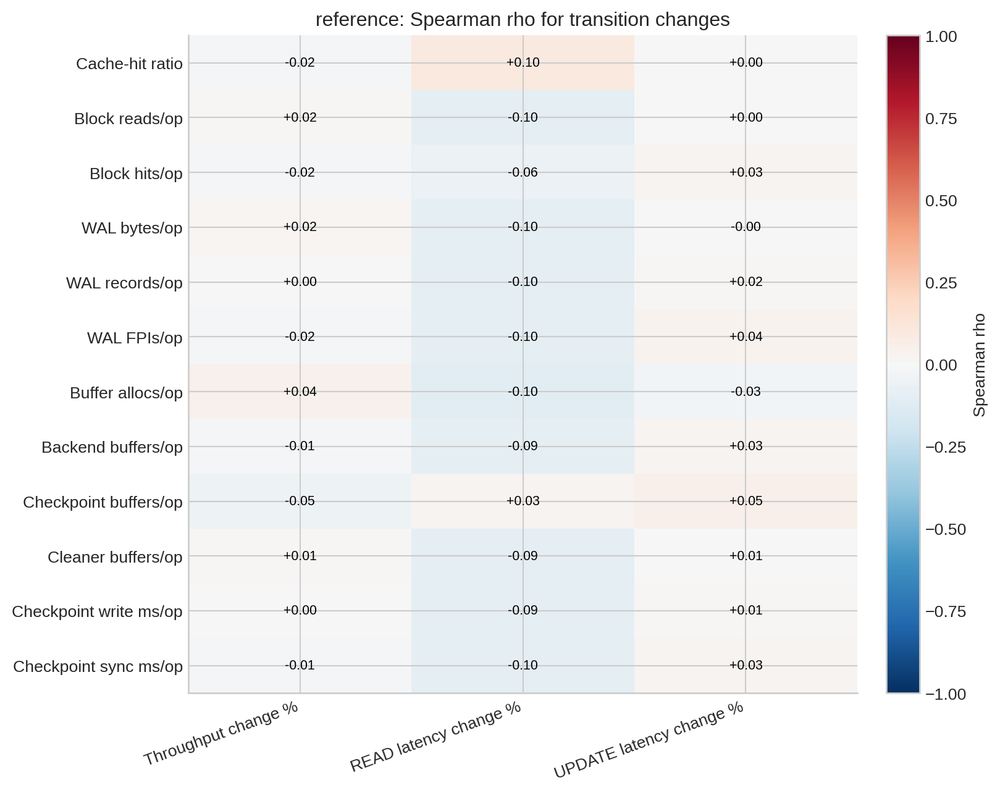
8.3 clean-run
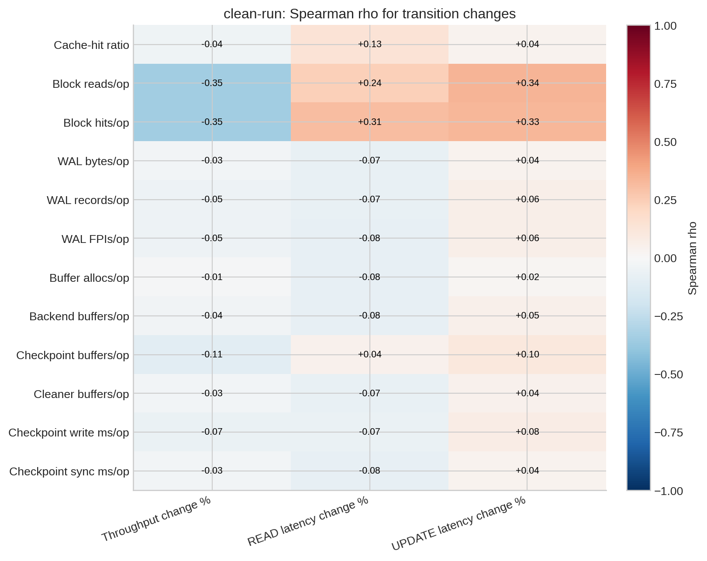
8.4 avg-run
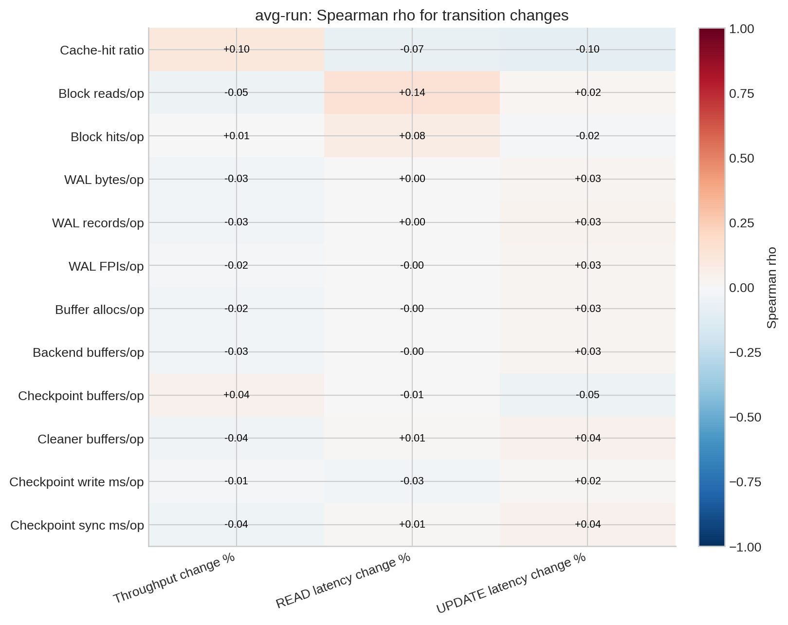
8.5 extend
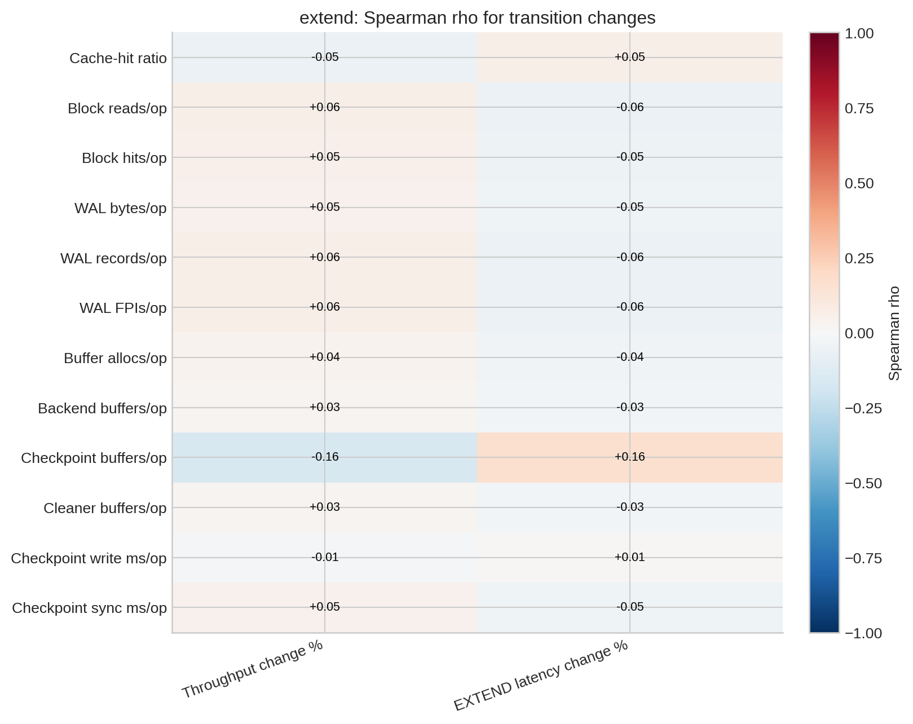
9 Block Reads Over Epoch
blks_read in the CSV is cumulative, so the first figure shows the raw cumulative snapshot at each epoch. The second figure shows the transition-normalized view already used elsewhere in this report:
d_blks_read_per_op = (blks_read_N - blks_read_(N-1)) / total_operations_N
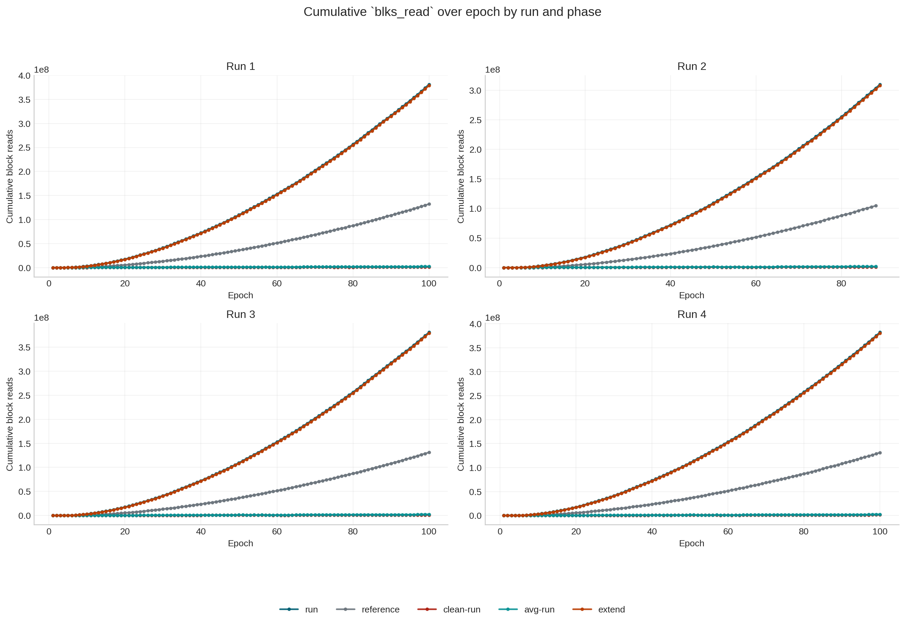
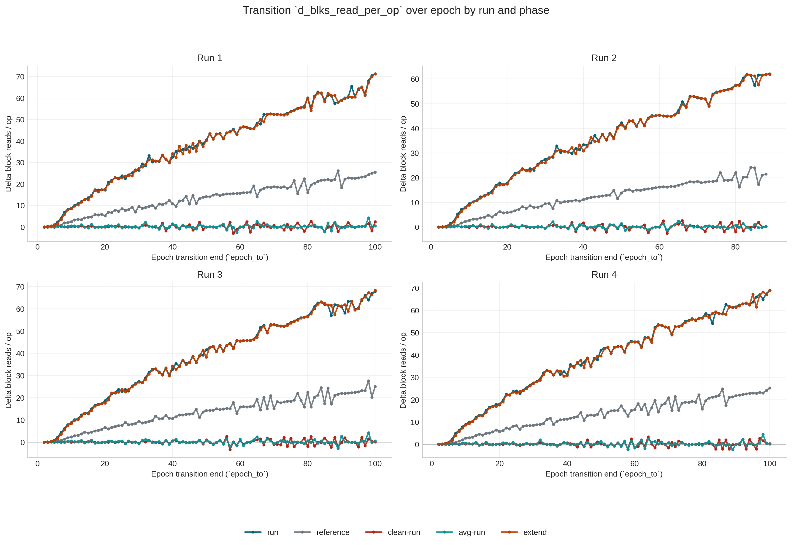
10 Latency Transition Vs Cache-Hit-Ratio Transition By Run
These plots use:
- x-axis:
cache_hit_ratio_change_pts - y-axis: latency transition over the same
epoch N-1 -> Nstep
Here cache_hit_ratio_change_pts is computed from the same-phase epoch snapshots:
100 * (cache_hit_ratio_N - cache_hit_ratio_(N-1))
where:
cache_hit_ratio_e = blks_hit / (blks_hit + blks_read)
This keeps the plot at the transition level, so a 100-epoch run still contributes 99 points per phase.
10.1 Run 1
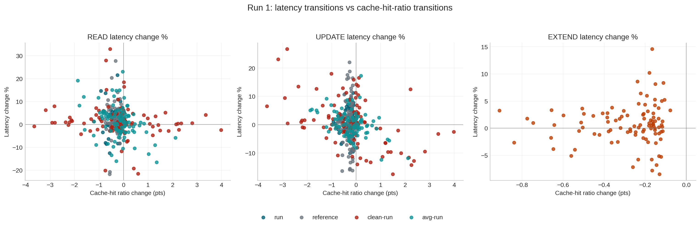
10.2 Run 2
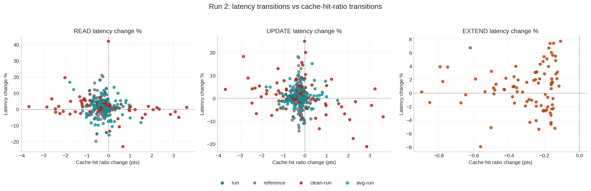
10.3 Run 3
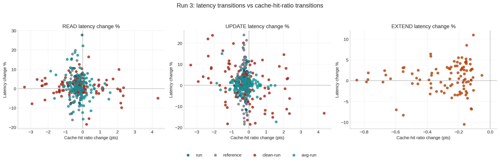
10.4 Run 4
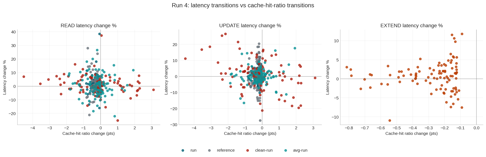
11 Epoch 14 -> 15 Transition Check
| Phase | Mean throughput change % | Mean READ latency change % | Mean UPDATE latency change % | Mean EXTEND latency change % | |
|---|---|---|---|---|---|
| 0 | run | +6.78 | -8.44 | -5.90 | +nan |
| 1 | reference | -0.17 | +1.35 | +0.01 | +nan |
| 2 | clean-run | +5.51 | -5.94 | -3.42 | +nan |
| 3 | avg-run | +7.14 | -14.51 | -5.41 | +nan |
| 4 | extend | +8.47 | +nan | +nan | -7.76 |
| phase | Cache-hit ratio | Block reads/op | Block hits/op | WAL bytes/op | WAL records/op | WAL FPIs/op | Buffer allocs/op | Backend buffers/op | Checkpoint buffers/op | Cleaner buffers/op | Checkpoint write ms/op | Checkpoint sync ms/op | |
|---|---|---|---|---|---|---|---|---|---|---|---|---|---|
| 0 | avg-run | +1.033 | -0.20 | +7.26 | +19746.49 | +33.49 | +1.680 | +18.40 | +7.63 | +0.12 | +2.06 | +3.310 | +0.034 |
| 1 | clean-run | +0.966 | +0.23 | +6.55 | +19980.17 | +33.29 | +1.715 | +18.65 | +7.81 | +0.11 | +2.08 | +3.310 | +0.034 |
| 2 | extend | +0.862 | +12.89 | +80.76 | +19688.35 | +29.99 | +1.717 | +17.84 | +7.41 | +0.10 | +2.12 | +3.348 | +0.023 |
| 3 | reference | +0.857 | +4.44 | +26.65 | +19698.43 | +31.60 | +1.700 | +18.40 | +7.71 | +0.10 | +2.10 | +3.242 | +0.031 |
| 4 | run | +0.860 | +13.35 | +82.21 | +19692.28 | +30.93 | +1.710 | +18.14 | +7.57 | +0.11 | +2.10 | +3.348 | +0.023 |
- The
14 -> 15step is still a useful sanity check: active phases improve strongly, but the counter deltas do not collapse. - That matches the broader transition-level result in this report: short-run performance changes are only partially explained by counter movement, and the epoch
15jump is not a simple counter-relief event.
12 Conclusions
- This Quarto report uses the transition definition you asked for: one data point per same-phase
epoch N-1 -> Nchange. - In runs with
100epochs, that yields99transition points per phase. - The strongest same-step relationships are phase-specific rather than universal.
clean-runis the most counter-sensitive phase from one epoch to the next, especially for block reads/op and block hits/op.extendhas a weaker checkpoint-buffer signal.run,avg-run, andreferenceshow mostly weak same-step relationships, even though their long-run degradation is obvious.- The practical takeaway is that counters are excellent at describing the broad drift of the workload, but they only partially explain individual epoch-to-epoch jumps and drops.